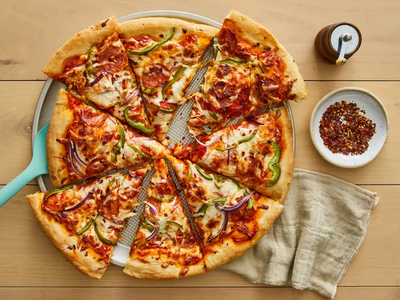

Home
Jay’s Signature Pizza Crust

Description
This thick crust pizza dough recipe yields a crust that is soft and doughy on
the inside and slightly crusty on the outside. Cover it with your favorite sauce
and toppings to make a delicious pizza.
- 1 ½ cups warm water (110 degrees F/45 degrees C)
- 2 ¼ teaspoons active dry yeast
- ½ teaspoon brown sugar
- 2 tablespoons olive oil
- 1 teaspoon salt
- 3 ⅓ cups all-purpose flour, divided